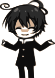

Welcome!
I am a software developer focused on web development programs as
well as in both desktop and mobile devices. I'm always interested
in learning about new technologies to expand my overview of the tools
that I have at my disposal. Besides, I adapt easily to the development
environment where I am going to work and also I am self-taught person.
「Do you think it's cool not to smile? If you go through life like that though,
you wouldn't notice. You can't be close to being a Minus like that. Even if things don't go the way
you want them to. Even if you lose. Even if you don't win. Even if you look like an idiot. Even
if you're walked on. Even if you're kicked. Even if you're sad. Even if you're bitter. Even if you're
tired of it all. Even if it hurts. Even if it's hard. Even if you're weak. Even if you aren't right.
Even if you're humble. Through all of that, we Minus always laugh.」
-Kumagawa Misogi ˜The good loser
